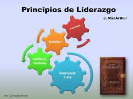

Los principios del liderazgo provienen del inglés “to lead”, que tiene por significado guiar o conducir. Sin embargo, se ha determinado que se trata de un proceso en el cual se influye a las personas de manera positiva para que de forma voluntaria o exaltada para que se cumpla con los objetivos empresariales.
Asi mismo, se destaca el concepto de líder como esa persona capaz de desarrollar habilidades o atribuciones que le permitirán ejercer sobre un determinado grupo de personas una influencia particular. Que llevarán a las mismas a la consecución de ciertas labores u objetivos.
Otras concepciones manejan el liderazgo como un conjunto de capacidades en las que una persona puede llegar a poseer determinada acción sobre un grupo de personas. Logrando que los mismos lleven a cabo las tareas con el mayor de los entusiasmos y que dichos objetivos sean manejados como comunes.
Sin embargo, el liderazgo posee determinados principios por los cuales se rige y cierta tipología que determina su posición frente a su grupo de trabajo.
Los principios de liderazgo son pautas fundamentales que guían el comportamiento y las acciones de los líderes. A continuación, profundizaremos en cada uno de los principios mencionados:

Este principio implica que un líder debe tener una comprensión clara de sus fortalezas, debilidades, valores y creencias. Al conocerse a sí mismo, un líder puede identificar áreas de mejora y buscar oportunidades para desarrollar habilidades y competencias.
Ser técnicamente capaz implica poseer un conocimiento y habilidades sólidos en el ámbito en el que se ejerce el liderazgo. Los líderes deben ser competentes en su campo de trabajo y comprender los aspectos técnicos y operativos para tomar decisiones informadas y proporcionar orientación efectiva a su equipo.
Los líderes deben ser responsables de sus acciones y decisiones. Esto implica reconocer los errores y asumir la responsabilidad de las consecuencias. Además, un líder debe fomentar una cultura de responsabilidad en su equipo, animando a los miembros a asumir la responsabilidad de sus propias acciones.
Un líder debe ser capaz de tomar decisiones firmes y oportunas basadas en la información y el análisis disponibles. La capacidad de tomar decisiones rápidas y efectivas es esencial para mantener el progreso y la eficiencia en un entorno de trabajo.
La comunicación clara y efectiva es esencial para el liderazgo exitoso. Un líder debe mantener a su equipo y a otras partes interesadas informadas sobre los objetivos, las estrategias, los cambios y los progresos. La transparencia y la apertura en la comunicación contribuyen a establecer la confianza y la cohesión en el equipo.
Además de asumir la responsabilidad personal, un líder debe fomentar un sentido de responsabilidad en los miembros del equipo. Esto implica delegar tareas y empoderar a los empleados para que tomen decisiones y sean responsables de sus propias acciones y resultados.
Un líder debe garantizar que las tareas y responsabilidades estén claras y comprendidas por todos los miembros del equipo. Además, se requiere una supervisión efectiva para asegurar que las tareas se cumplan de manera oportuna y satisfactoria.
Un líder debe promover el trabajo en equipo y crear un ambiente colaborativo. Esto implica desarrollar las habilidades y competencias de los miembros del equipo, fomentar la comunicación y la colaboración, y construir relaciones sólidas entre los miembros.
Un líder debe aprovechar y potenciar el talento y las habilidades de los miembros de la organización. Esto implica asignar tareas y responsabilidades de acuerdo con las fortalezas y competencias individuales, y fomentar un ambiente en el que cada miembro pueda contribuir al máximo de su potencial.
Los líderes deben ser un modelo a seguir para su equipo. Esto implica demostrar los valores y comportamientos deseados, actuar con integridad y ética, y mantener altos estándares de rendimiento y conducta.
Un líder efectivo debe tener un conocimiento profundo de los miembros de su equipo, incluyendo sus fortalezas, necesidades y aspiraciones. Además, un líder debe preocuparse por el bienestar y el desarrollo personal y profesional de los empleados, brindando apoyo y oportunidades de crecimiento.
Estos principios proporcionan una base sólida para el liderazgo efectivo. Sin embargo, es importante tener en cuenta que el liderazgo es un proceso continuo de aprendizaje y adaptación, y que cada líder puede agregar sus propios principios y enfoques en función de su estilo y contexto particular.